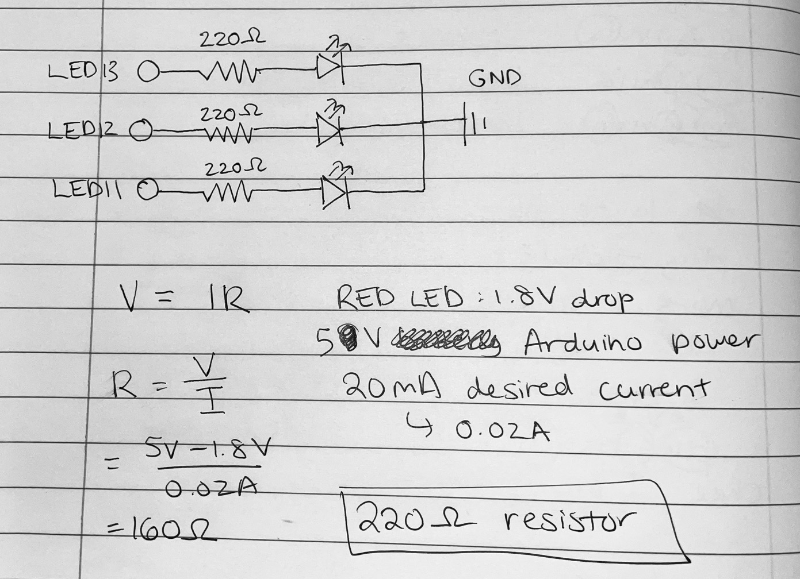
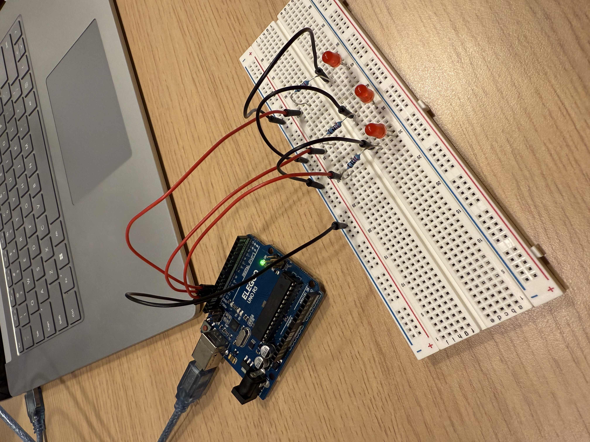
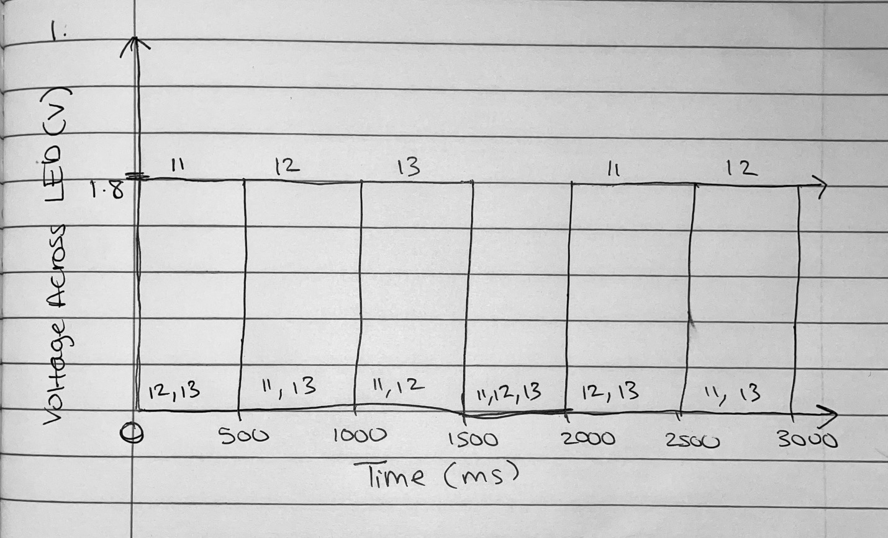

Fig 1: Circuit Schematic and Calculations
I used 220ohm resistors for each LED based on the red LED voltage of 1.8V, the Arduino's 5V output, and the desired current of 20mA. R = (5V - 1.8V)/0.02A = 160ohm. 220ohm is the best resistor I can select from the Arduino kit.
Fig 2: Circuit Setup
The Arduino is connected to 3 LEDs, each with a 200ohm resistor. Each LED is controlled by a digital pin of the Arduino (in this case, 11, 12, and 13).
Firmware
void setup() {
// initialize digital pins 11, 12, 13 as outputs.
pinMode(11, OUTPUT);
pinMode(12, OUTPUT);
pinMode(13, OUTPUT);
}
// the loop function runs over and over again forever
void loop() {
// turn on LED 11, turn off 12 and 13
digitalWrite(11, HIGH); // turn on LED 11
digitalWrite(12, LOW); // turn off LED 12
digitalWrite(13, LOW); // turn off LED 13
delay(500); // wait 500ms
// turn on LED 12, turn off 11 and 13
digitalWrite(12, HIGH); // turn on LED 12
digitalWrite(11, LOW); // turn off LED 11
digitalWrite(13, LOW); // turn off LED 13
delay(500); // wait 500 ms
// turn on LED 13, turn off 11 and 12
digitalWrite(13, HIGH); // turn on LED 13
digitalWrite(11, LOW); // turn off LED 11
digitalWrite(12, LOW); // turn off LED 12
delay(500); // wait 500 ms
// turn off all the LEDs
digitalWrite(11, LOW); // turn off LED 11
digitalWrite(12, LOW); // turn off LED 12
digitalWrite(13, LOW); // turn off LED 13
delay(500); // wait 500 ms
}
Fig 3: Blinking GIF

Each LED is lit up for 500ms before dimming. Once each LED has been lit up once, all three LEDs dim for 500ms before the loop repeats.
Additional Questions:
Fig 4: Time vs Voltage Chart
1. This is a graph visualizing the voltage across the LEDs with X axis being time(ms), and the Y axis being voltage(V). Individually, each LED is lit up for 500ms at a time before turning off. Once each LED has been lit up once, they all remain off for 500 ms. This loop repeats. This creates the appearance of a step graph. The reason why the line for an LED voltage is at 1.8V when it is on is because a red LED typically has a forward voltage drop of around 1.8 volts.
2. I could theoretically independently blink 14 LEDs with my Arduino. That would be a total current of 14 LEDs * 20mA = 280 mA, which would be over the 200mA maximum of an Arduino. Considering the maximum, I could blink 200mA/20mA = 10 LEDs.
4. For me, at 12ms it began to be difficult to see that my LEDs were blinking. At 10ms, I could no longer tell that they were blinking at all.